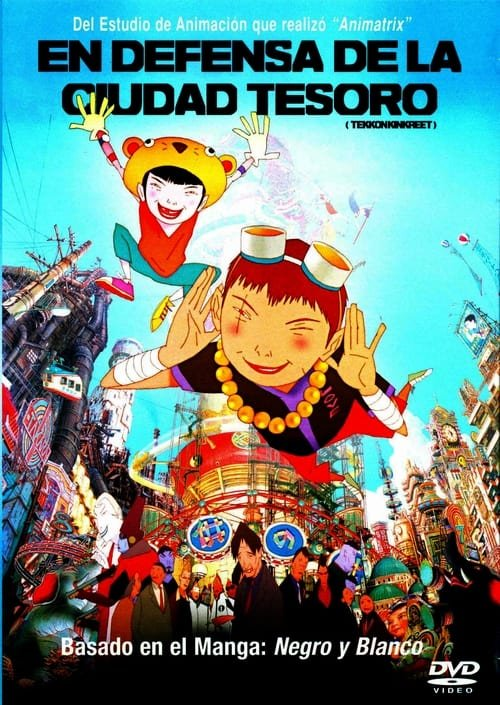

TekkonKinkreet (2006)
Sinopsis Rápida
En Treasure Town, dos huérfanos callejeros, Kuro y Shiro, se enfrentan a la despiadada Yakuza en una batalla por la supervivencia, donde la amistad y la lealtad se ponen a prueba en un mundo de neón y violencia desbordante.
Sinopsis Detallada
TekkonKinkreet es una obra maestra de la animación japonesa que fusiona de forma magistral la estética del manga con una narrativa vibrante y visualmente impactante. La película sigue a Kuro y Shiro, dos jóvenes huérfanos con personalidades opuestas que gobiernan las calles de una ciudad futurista y decadente. Su reinado de libertad llega a su fin cuando se ven envueltos en una peligrosa guerra contra la Yakuza, lo que los obliga a confrontar no solo a sus enemigos, sino también a su propia mortalidad y la compleja naturaleza de su vínculo. La película es una experiencia visualmente impresionante, con un estilo artístico único y una fluidez en la animación que captura la energía de la ciudad y la intensidad de sus personajes. Una mezcla explosiva de acción, drama y una profunda exploración de la amistad y la pérdida.
¿Por qué tenés que verla?
- Una experiencia visualmente deslumbrante que te dejará sin aliento.
- La banda sonora única e inolvidable de Yasuhiro Takada eleva la experiencia a otro nivel.
- Su impacto en la animación y el cine independiente es innegable, inspirando a otros artistas y cineastas.
- Una historia conmovedora sobre la lealtad, la amistad y la supervivencia en un mundo hostil.
Idea Extra
Comparación del estilo artístico de TekkonKinkreet con otros trabajos de Taiyou Matsumoto y el impacto de su estética en la animación moderna.